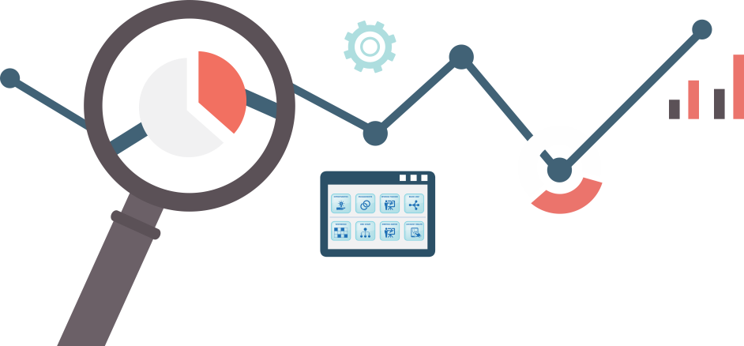

PROJECT TRACKER
Home
Getting Started
My Profile
Projects
My Tasks

Welcome to the Project Tracker, built by Sarah Bell and Jared Payne.
Please use the navigation, or if you haven't already,
create you profile
today.
>